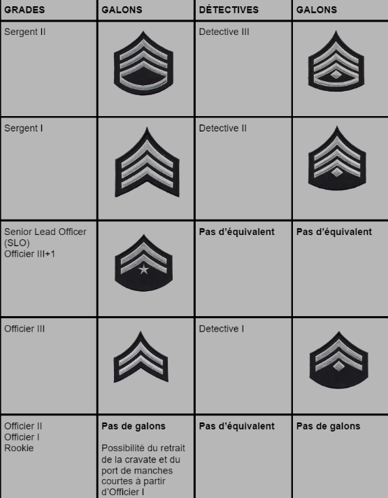
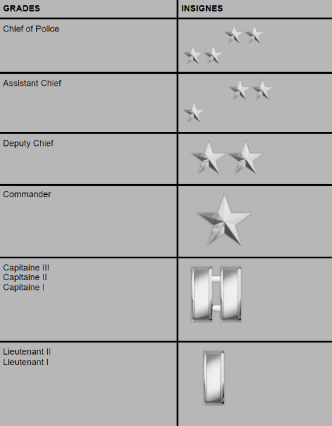

Grades & Insignes
Insignes officiels du LSPD : chevrons brodés (terrain & investigation), barres argentées (command staff) et étoiles (direction). Survole un insigne, clique pour zoomer en plein écran.
Qu'est-ce que le First Lincoln (FL) ?
Le First Lincoln est le premier leadership exercé de manière autonome sur le terrain. Il est obligatoire pour l'Officier II afin de progresser au grade supérieur, et doit être validé par la supervision.
Règle d'ancienneté
L'ancienneté est fondamentale dans le LSPD : une barre de galon dorée équivaut à 5 ans de service. Elle se cumule indépendamment du grade.
Communication radio
Le matricule est réservé aux communications RADIO uniquement.
Vouvoiement
Tutoiement INTERDIT avec les supérieurs. Vouvoiement + grade obligatoire.
Chaîne hiérarchique
Un Officier I adresse ses questions à un Officier II (de préférence son TO référent). Ne pas sauter les échelons.
Ancienneté
1 barre de galon dorée = 5 ans de service. Repères : 5 / 10 / 15 ans.


Tenues & Apparence
Quatre classes d'uniforme, leur attribution par grade, et les règles d'apparence en vigueur sur le terrain.
Attribution par grade
Règles d'apparence
Codes Pénaux
Les infractions à connaître pour qualifier une intervention. Les pastilles bleues signalent les écarts entre le RP et le droit californien réel.
Codes Radio
Le langage des ondes. Annonce le bon code pour signaler ta priorité, ta position et tes besoins en renfort.
Droits Miranda
À réciter au suspect. Anglais par défaut, espagnol selon l'interlocuteur.
"You have the right to remain silent. Anything you say can and will be used against you in a court of law. You have the right to an attorney. If you cannot afford an attorney, one will be appointed for you. Do you understand these rights as they have been read to you?"
"Tiene el derecho de guardar silencio. Todo lo que diga puede y será usado en su contra ante un tribunal de justicia. Tiene el derecho a tener un abogado presente. Si no puede pagar un abogado, se le asignará uno antes del interrogatorio. ¿Entiende estos derechos?"
Procédures Terrain
Le déroulé d'une arrestation propre, et l'arrivée au poste (PDP).
Arrestation
Sécuriser la scène & le suspect
Mise en joue et sommations si nécessaire. Neutraliser toute menace avant le contact.
Code 4 = sous contrôleMenottage
Mains dans le dos, double verrouillage des cliquets.
Fouille de sécurité
Palpation : armes, objets dangereux, identité.
Lecture des droits Miranda
Anglais (puis espagnol selon l'interlocuteur). Confirmer la compréhension.
Voir onglet MirandaAnnonce radio & transport
Code 6 sur les lieux, demande de transport, code pénal retenu communiqué au dispatch.
Code 6 · RA si blesséAcheminement au poste (PDP)
Transport sécurisé du suspect jusqu'au commissariat.
Enregistrement & notification
Fouille complète, inventaire des effets, lecture des charges et durée de détention.
Poste — PDP
Protocole blessé
Sécuriser & évaluer
Sécuriser la zone et évaluer l'état du blessé (conscience, hémorragie).
Annonce radio Code 3 + RA
Demander immédiatement une ambulance / paramedic (RA).
Code 3 · RAPremiers soins
Maintien en vie et stabilisation jusqu'à l'arrivée des secours.
Traitement au poste (PDP)
Remise au poste
Acheminement et remise du suspect au poste (PDP).
Fouille complète & inventaire
Fouille intégrale, inventaire des effets personnels.
Identification & enregistrement
Identité, photo, enregistrement au registre.
Notification des charges
Lecture des codes pénaux retenus et des droits.
Durée de détention
Détermination du temps de détention selon la qualification.
Cellule / superviseur
Mise en cellule ou présentation au superviseur si requis.
Qualification des infractions selon la gravité des faits. La qualification détermine la procédure, la sanction et la durée de détention.
Contravention
- PV uniquement
- Pas d'arrestation
- Amende simple
Délit mineur
- Amende plafonnée
- Jamais $1 000 000
- Garde à vue courte possible
Délit majeur / Crime
- Procédure pénale complète
- Mise en jugement
- Rapport obligatoire
Responsabilité de l'officier
Tout officier réalisant une arrestation est responsable du respect intégral de la procédure. Un vice de procédure peut entraîner :
- L'annulation de toutes les charges
- Des sanctions disciplinaires internes
- La remise en liberté immédiate du suspect
Traffic Stop
Procédure officielle de contrôle routier — inspirée LSPD / LAPD. Positionnement, dead zone, répartition du binôme et déroulé pas à pas, puis la procédure Felony Stop à haut risque.
Restrictions — quand NE PAS faire de contrôle
Lieux interdits : autoroute, zone très fréquentée, voie piétonne — trop risqué pour les officiers comme pour les civils.
Dead zone : l'espace situé entre le feu avant droit de notre véhicule et le feu arrière gauche du véhicule contrôlé. Ne jamais y stationner ni y circuler — zone d'exposition maximale.
Officier 1
Contrôle et gère le ou les suspects, mène l'interaction. Se positionne à l'angle mort du conducteur et conduit la conversation.
Officier 2
Sécurise la scène, surveille les alentours et vérifie les informations sur le MDT : casier, avis de recherche, véhicule volé, validité du permis.
📍 Positionnement
Véhicule de police placé en diagonale derrière le véhicule contrôlé. Force la circulation à se déporter et évite les frôlements.
Diagonale🚨 Gyrophares + haut-parleur
Activer les gyrophares, puis demander au conducteur de couper le moteur et de garder les mains visibles.
Code 2📻 Call radio initial
Traffic stop + position précise + modèle/plaque + nombre d'occupants. Si la radio est chargée et le contrôle non urgent, un message au dispatcher suffit.
Dispatch🚪 Descendre du véhicule
Approcher en restant hors de la dead zone.
Hors dead zone🧳 Vérification du coffre
S'assurer visuellement qu'il est fermé et que personne ne s'y trouve.
🫥 Angle mort du conducteur
Se placer légèrement derrière la portière : l'officier peut réagir avant d'être atteint tout en restant audible du suspect.
Blind spot💬 Entamer la conversation
Saluer, se présenter, énoncer clairement le motif du contrôle.
🪪 Demande de documents
Pièce d'identité + carte grise. L'Officier 2 vérifie en parallèle sur le MDT : casier, avis de recherche, véhicule volé, validité du permis.
MDT👥 Gestion des occupants
Le conducteur reste dans le véhicule par défaut. Exception : avec plusieurs passagers, seul le conducteur peut être invité à descendre — les passagers restent à bord.
🧠 Adapter la posture
Selon le comportement, la situation et les infos MDT : coopératif / suspect / wanted.
MDT : wanted ?🔚 Fin du contrôle
Informer oralement le conducteur qu'il peut repartir, puis attendre qu'il klaxonne avant de partir. Le klaxon signale la reprise en sécurité.
Attendre le klaxon✅ Call radio de clôture
Situation sous contrôle, retour en patrouille.
Code 4Sanctions & avertissements
Avertissement écrit : consigné dans le MDT avec mention orale au conducteur. Il servira de référence lors d'un prochain contrôle de la même personne.
Si le contrôle devient dangereux
Suspect armé, véhicule recherché, comportement hostile :
- Call radio prioritaire immédiat et demande de backup.
- Ne pas s'approcher seul.
- En cas de perte visuelle d'un fuyard : annoncer un Code 4 Adam et lancer immédiatement un BOLO (description du suspect ou du véhicule).
Felony Stop
Interpellation à haut risque : occupants suspectés d'un crime grave (arme à feu, véhicule volé, suspect wanted). Mobilise plusieurs unités et exige une coordination stricte.
Définition
Le felony stop s'applique lorsqu'on suspecte les occupants d'un véhicule d'avoir commis un crime grave (arme à feu, véhicule volé, suspect wanted, etc.). Plusieurs unités sont mobilisées et la coordination doit être stricte.
Principe de la formation
- Véhicules en arc de cercle derrière le suspect, portes ouvertes : chaque officier a une couverture.
- Adaptable de une à plusieurs unités selon les effectifs disponibles.
- Tous descendent arme dégainée, en position de couverture — les angles de tir convergent et ne se croisent jamais.
Une seule voix sur le terrain
Dès la formation établie, une unité est désignée Incident Commander. C'est elle qui prend le mégaphone et lead toute l'opération. Les autres unités n'interviennent pas vocalement, sauf ordre contraire.
Dans cet ordre — attendre la conformité du suspect avant de passer à l'instruction suivante.
🔑 Coupez le moteur
Couper le contact immédiatement.
✋ Mains en évidence
Mains bien visibles, hors de l'habitacle.
🚪 Sortez du véhicule
Sortie lente, sans geste brusque.
↩️ Deux pas sur la gauche
S'écarter du véhicule pour dégager la ligne de visée.
🔙 Reculez dos à moi
Reculer dos aux unités jusqu'à l'ordre d'arrêt.
🌀 Vêtement + tour complet
Soulever le haut et faire un tour complet sur soi-même (vérifier la ceinture).
🧎 À genoux, mains sur la tête
À genoux, mains sur la tête, doigts croisés.
Officier 1
S'approche du suspect, procède au menottage, puis à une palpation de sécurité complète. Escorte ensuite le suspect vers le véhicule de police.
Officier 2
Se positionne en couverture derrière l'Officier 1, arme braquée sur le suspect jusqu'à la sécurisation complète.
Fin de procédure
Tous les occupants sécurisés et menottés, l'Incident Commander annonce le Code 4 à la radio. Le périmètre est levé : les unités retournent en patrouille ou escortent les suspects au poste selon les instructions.
Divisions & Unités
Vue d'ensemble de l'organisation interne du LSPD. Chaque division a un rôle dédié — clique une carte pour le détail.
Règle d'affectation
Chaque officier ne peut appartenir qu'à UNE SEULE division majeure à la fois.
Quiz de Révision
Teste tes connaissances sur toutes les sections. Score et progression mis à jour en direct.